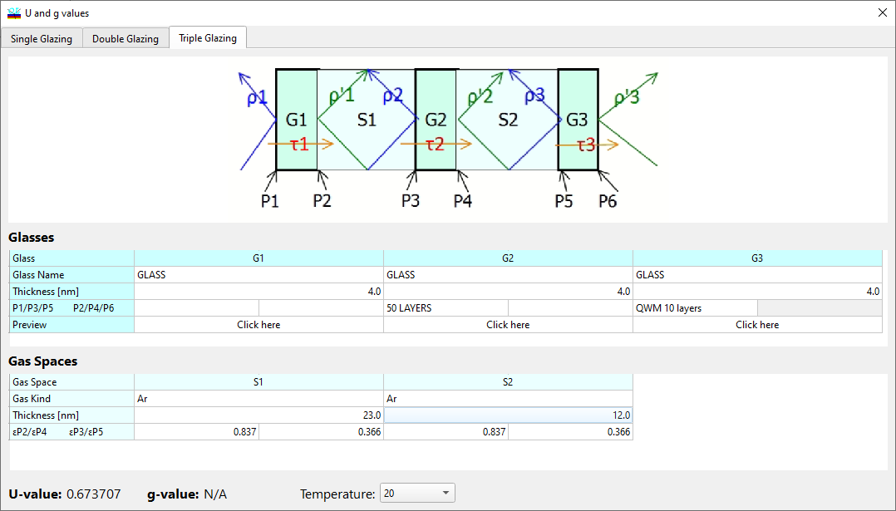
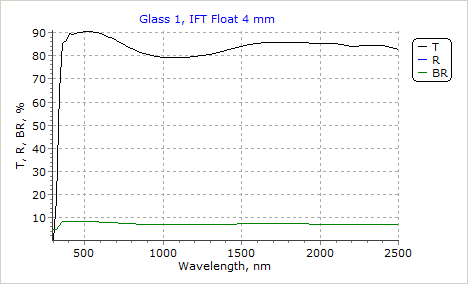
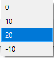
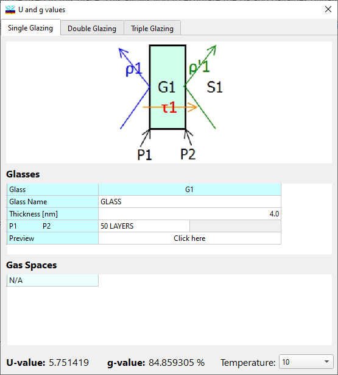

U- and g-values
U- and g-values
Navigation: OptiLayer Menu Commands > Results Menu >
U- and g-values
` <material_dispersion_setup.html>`__ ` <idh_menu_results.html>`__ ` <tabulatereportsetup.html>`__
U- and g-values definitions and descriptions can be found in DIN EN 410 and DIN EN 673 standards. These values are often used in the architectural glass industry to describe the quality of glazing. In OptiLayer, it is possible to consider a double-glazing configuration.

This can be selected with tabs at the upper part of the window. The schematic of the glazing is shown in the middle of the window; the external space is to the left and the building interior is to the right.
Glasses
Glass Name entries allow you to select a glass from the Substrate database. Two standard glasses named IFT Float and EuroFloat are pre-created in the substrate database when you first open the U- and g-values window. The Thickness mm field allows you to set the thickness of the glasses. P1/P3, P2/P4, … entry fields allow you to set a coating from the Design database for each surface of each glass. Look at the schematic to check the correct position of the surface. Coating layers are always numbered in the direction away from the glass. There is also a special object Current in the configuration list. If Current is selected as a coating on one or more surfaces, the currently loaded design in memory will be used in this place. This allows you to estimate the U- and g-values dynamically in the course of solving a synthesis problem, as they are updated every time the design is updated. The Preview row contains buttons that open small windows with spectral curves for each of the glasses composing the glazing. This allows a quick check of the correct specifications for each glass. For example:

Transmittance, Reflectance, and Back Reflectance of the glass are shown. Coatings on both sides (if present) are taken into account in this preview.
Gas Spaces
Gas type entry fields allow you to select the gas filling the space between the glasses. Thickness mm allows you to select the thickness of the space between the glasses. ε P2, ε P3, ε P2/P4, ε P3/P5 entries specify the so-called corrected emissivity factors (DIN EN 673).
The temperature at the bottom of the window indicates the ambient temperature for which the U and g values are being calculated.

U- and g-values are represented at the bottom of the window. They are recalculated every time any of the settings is changed.
Note: Single glazing mode is also available in this option starting from version 12.12.
